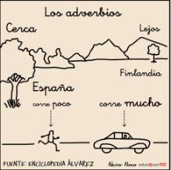

1. What you need to know
Video
Click here to read the subtitles
Notes
- News are facts. Facts are the same for everybody. (Los hechos son iguales para todo el mundo)
- Opinions are not facts. Opinions are not the same for everybody. (Las opiniones no son las mismas para todo el mundo)
You will find both news and opinions in the media. (Ambas aparecen en los medios de comunicación)
HOW TO EXPRESS OPINION:
- I think / believe that...
- In my opinion,...
- As I see it,...
- From my point of view,...
- I agree with...
- I disagree with...
Make your opinions stronger with adverbs: definitely, firmly, truly, strongly or really. (Haz que tu opinión suene más fuerte con adverbios):
- I firmly believe that the future will be better than the past.
- They really dislike what the president said.
- I strongly disagree with you.
When an opinion is given, it’s always a good idea to explain it. Use because and since. (Cuando expreses tu opinión es bueno explicar el porqué):
- I strongly disagree with banning mobile phones at school because they are a great learning tool.
- I think it’s a good idea to ban mobiles at school since they are very distracting.
Lectura facilitada
Read
 News are facts.
News are facts.
Facts are the same for everybody.
Las noticias son hechos.
Los hechos son los mismos para todos.
Different people have different opinions.
In order to express opinions:
Las opiniones cambian según la persona.
Para opinar:
You use the verbs “believe”, “like” or “”think”.
You use these verbs in the affirmative.
You use these verbs in the negative.
- Usas los verbos “creer”, “gustar” o “pensar” para opinar.
- Usas estos verbos en afirmativo.
- Usas estos verbos en negativo.
You use expressions such as:
- As I see it.
- From my point of view.
- In my opinion.
- I agree.
- I disagree.
- Usas expresiones como:
- Tal y como yo lo veo.
- Desde mi punto de vista.
- En mi opinión.
- Estoy de acuerdo.
- No estoy de acuerdo.
 You use adverbs such as:
- Definitely.
- Firmly.
- Truly.
- Strongly.
- Really.
-Usas adverbios como:
- Definitivamente.
- Firmemente.
- Verdaderamente.
- Fuertemente.
- Realmente.
 You express your opinion.
You express your opinion.
Explicas tu opinión.
 There are different roles in the media:
There are different roles in the media:
- Hosts and reporters tell the news.
- Panellists give their opinions
Hay distintos roles en los medios:
- Los presentadores y reporteros cuentas noticias.
- Los tertulianos dan su opinión.